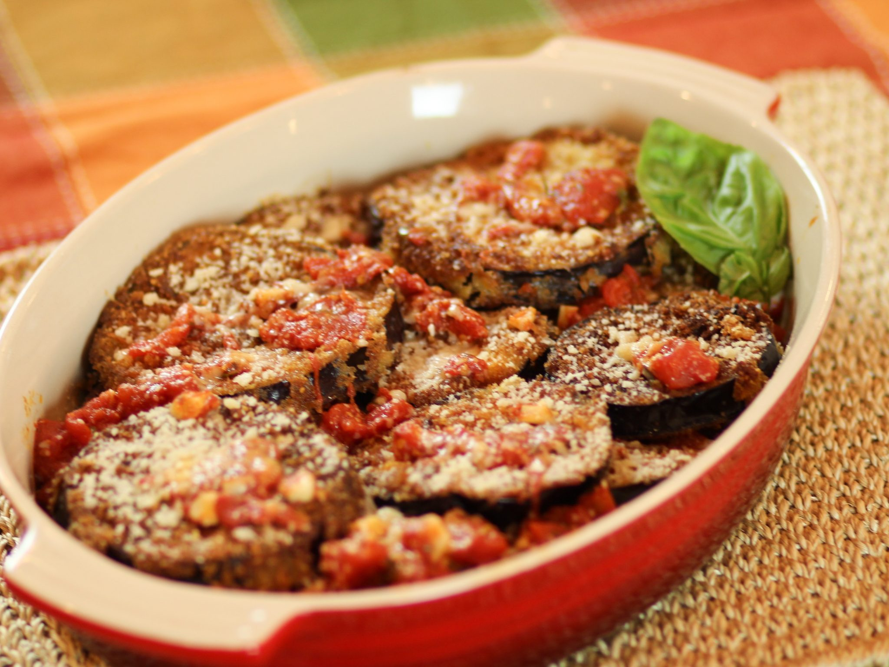

Eggplant-Parmesan

A great eggplant recipe
this is a good recipe to use when you have some eggplants to use
Ingredients
- 2 large eggplants
- 2 gloves garlic
- 1/2 cup grated Parmesan
- 3/4 cup ricotta cheese
- 3 cups prepared marinara sauce
Steps
- Preheat oven to 375 degrees F
- Cut 5 crosswise slices from center area of each eggplant, about 1/2-inch thick
- Heat 1 tablespoon olive oil in skillet and cook garlic for about 10 seconds; add diced eggplant and season with a pinch of salt and red pepper flakes. Saute until eggplant is softened, about 5 minutes. Pour in marinara sauce and water. Turn heat to medium-low and cook until eggplant is tender, about 15 minutes; stir occasionally. If sauce gets too thick, add a little more water.